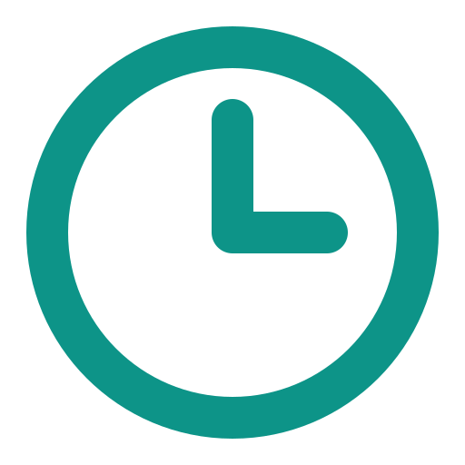

Orario Pellicano
Liceo • Consultazione Orari
Connesso
×
Caricamento dell'orario in corso...
Orario
Radar
Sostituzioni
Preferiti
Impostazioni
⚙️ Impostazioni Proxy & Dati
×
Endpoint Cloudflare Worker Proxy (GET)
Inserisci l'URL del tuo Cloudflare Worker che fa da reverse proxy all'orario XML con intestazioni CORS.
Salva Endpoint
Predefinito
Sincronizzazione Manuale & Cache
🔄 Sincronizza Ora
🗑️ Svuota Cache
Tema Interfaccia
☀️ Attiva Tema Chiaro
Statistiche Dataset Attivo